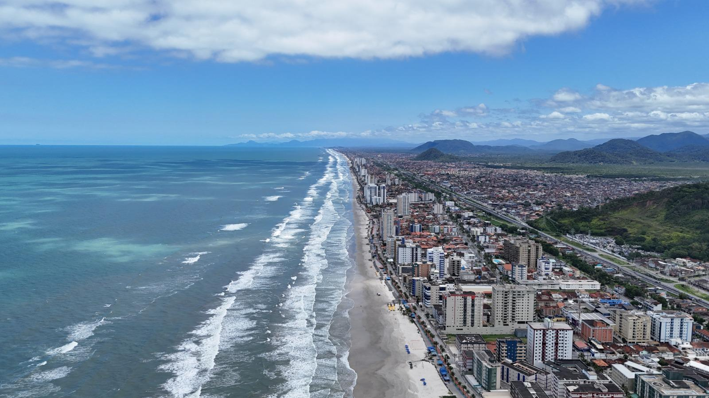

História

A área inicial de Mongaguá, situada entre os rios Mongaguá e Aguapeú e habitada pelos índios guaranis, começou a ser percorrida em 1532 por colonizadores e missionários portugueses. O local tornou-se pouso de viajantes que desfrutavam, sobretudo, da boa qualidade da água e da abundância de peixes. A região, porém, só veio se desenvolver de forma mais efetiva, no século XX como balneário.
Tornou-se distrito do município de Itanhaém em 24 de dezembro de 1948, com território formado pelo povoado de mesmo nome, acrescido de terras dos distritos sedes de Itanhaém e São Vicente. Em 18 de fevereiro de 1959, foi elevado a município autônomo.
A formação da cidade está ligada à posição costeira e aos cursos d'água que atravessam a região. Antes de se consolidar como destino de praia, o povoado servia de passagem e parada para quem percorria o litoral. A presença de água e peixes ajudava a sustentar os viajantes e moradores, enquanto a ocupação permanecia concentrada perto da orla e dos rios.
As mudanças administrativas marcaram etapas distintas desse processo: primeiro, a integração ao território de Itanhaém; depois, a criação do distrito e, por fim, a autonomia municipal. A transformação em balneário no século XX acompanhou o crescimento do interesse pelo litoral e alterou o perfil da localidade, aproximando a história de Mongaguá da expansão turística da Baixada Santista.
Hoje, a cidade reúne áreas urbanas, faixa litorânea e ambientes naturais associados aos rios e à costa. Essa combinação ajuda a compreender a relação entre a ocupação humana e a paisagem local, além de explicar por que o desenvolvimento da cidade esteve tão ligado às viagens e ao lazer junto ao mar.